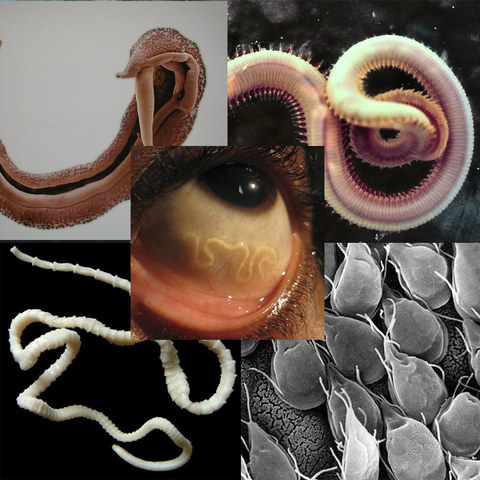
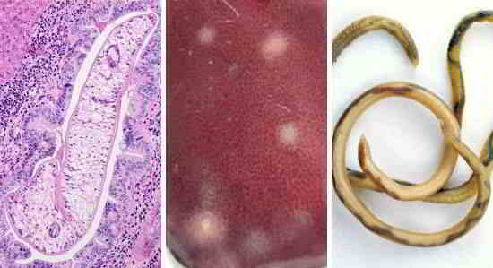
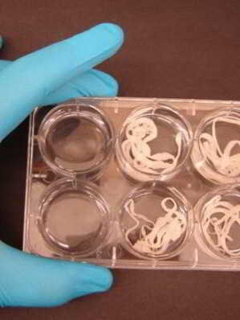
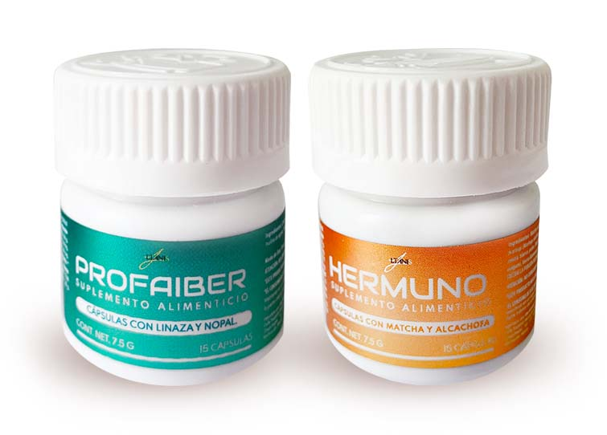

¡Revelación! Impotencia, aftas, mal aliento, cáncer de hígado y corazón: ¡8 de cada 10 casos son causados por infecciones parasitarias!
¿Lo sabía? Los parásitos pueden liberar toxinas, envenenar el cuerpo y provocar inmunodeficiencia. En el 69% de todos los casos, las infecciones parasitarias causan cáncer de hígado y de corazón, y en el 53% de los casos causan impotencia en los hombres, aftas y cistitis en las mujeres.
¡Hola! Dejen que me presente. Me llamo Jessica y era investigadora en un Centro de Investigación de Parásitos. Mi trabajo allí consistía en probar diversos medicamentos para prevenir infecciones parasitarias. Una vez, descubrí un secreto sucio en la oficina. Tenía la intención de revelarlo lo antes posible, pero me dijeron que mantuviera la boca cerrada e incluso me amenazaron. Aún así, intenté revelarlo por todos los medios posibles porque no quería que se murieran miles de personas. Había escrito sobre esto varias veces en otros blogs que fueron eliminados. ¡No me quiero dar por vencida! La gente debe conocer esto.
En 2016, se publicó un artículo científico que preocupaba a los especialistas. El estudio, que duró 17 años y en el que participaron 12.400 voluntarios, fue realizado conjuntamente por investigadores y médicos de Alemania, Estados Unidos, Austria y Rumania. Estos lograron demostrar que los parásitos son la causa de enfermedades graves que podrían causar la muerte en el 78% de los casos. Las conclusiones y sugerencias de este estudio mostraron que las personas deben realizar una desintoxicación para evitar que enfermedades mortales infecten el cuerpo y prolongar su vida hasta 15 años. Las toxinas liberadas por estos parásitos pueden desencadenar la aparición de tumores peligrosos y convertirse en enfermedades graves.
¡Estos parásitos han matado a 5.700 personas en varias partes del mundo!
Casi todos pueden ser infectados por los parásitos. Los datos estadísticos muestran que el 74% de la población de México ha sido infectada por parásitos. Peor aún, ¡muchas personas ni siquiera sabían sobre este hecho! Los gusanos parásitos pueden crecer hasta 2,5 metros de largo, como por ejemplo las tenias, que pueden vivir y crecer en el cuerpo durante mucho tiempo sin que nadie lo note. Estos parásitos depositan miles de huevos y liberan toxinas que pueden envenenar el cuerpo. Esto puede desencadenar el desarrollo de cáncer, que es difícil de curar, así como sangrado severo.
En el 65% de los casos, los parásitos pueden causar aftas e impotencia.
En el 65% de los casos, los gusanos redondos (nematodos) y los parásitos desencadenan el desarrollo del virus del herpes y el patógeno Candida albicans, que se vuelve difícil de curar debido a la cantidad de veneno.
En el 65% de los casos, los nematodos y gusanos desencadenan el desarrollo de virus del herpes y Candida, que se vuelve incurable debido a la cantidad de veneno.
EL CRECIMIENTO DE AFTAS Y LA IMPOTENCIA DEBIDO A LAS INFECCIONES POR PARÁSITOS EN 30 AÑOS
Hombres Mujeres
Naturalmente, los parásitos se convierten en piojos que están latentes u ocultos en la naturaleza, luego causan mal aliento, acné y dolor en el cuerpo. Este síntoma es en realidad el inicio de otra enfermedad, y también un signo temprano de infección parasitaria. El sistema inmunitario no puede proteger al cuerpo de esta enfermedad porque ya ha sido dañado por parásitos. Las toxinas del parásito se acumulan en la sangre y los órganos internos.
El tricomonas, un parásito que vive en los vasos sanguíneos, es la causa del 94% de los ataques cardíacos y accidentes cerebrovasculares a una edad temprana. En el 89% de los casos, si una persona experimenta dolores de cabeza frecuentes, esto también puede ser la causa de parásitos. Aquí hay una imagen que muestra claramente la forma del parásito:
Y este es un hígado infectado con esquistosoma:
Los síntomas de la infección son:
• dificultad para respirar • mal aliento • erección débil • alta presión sanguínea • dolor de cabeza • dolor de los nervios • hinchazón • problemas de la piel como puntos negros y espinillas • dolor de pecho
Nuestro centro de investigación desarrolló previamente un tratamiento para las infecciones parasitarias. El producto logró eliminar los parásitos en tres días, pero resultó ser que no pudo matar las larvas, por lo que los parásitos reaparecieron. Los resultados no coincidieron con mis expectativas y, finalmente, decidí continuar este estudio por mí misma con el riesgo de rechazo y revocación de mis licencias médicas. El jefe de nuestro centro de investigación decidió pasar los productos que desarrollamos a las farmacias para obtener la mayor cantidad de dinero posible.
Esto es lo que hallé...
En la investigación que realizamos, utilizamos un ingrediente natural y barato: Extracto de Achillea millefolium. El Extracto de Achillea millefolium puede "disolver" los parásitos y eliminar las toxinas del intestino. Sin embargo, la cantidad del Extracto de Achillea millefolium en el producto era demasiado pequeña e inadecuada. En la composición de nuestro producto había componentes químicos peligrosos que tenían como objetivo reducir temporalmente la actividad parasitaria. En el momento del desarrollo, no había suficientes componentes beneficiosos para limpiar las larvas y los parásitos podridos. Después de un tiempo, estos componentes estimularían nuevamente la reproducción del parásito. Los síntomas de la infección reaparecerían acompañados por el riesgo de cáncer y otras afecciones graves. En resumen, este "superproducto" solo puede tratar los síntomas, pero no la causa subyacente. Mencioné este problema al líder de mi equipo y me sorprendió lo que dijo: "¿En qué estaba pensando, Jessica? ¿Quiere que desarrollemos un producto que resuelva todos los problemas a la vez y que nos deje a todos desempleados? ¡Esto es lo que nos da dinero!" Luego, me dijo que guardara silencio e incluso me amenazó si abría la boca.
El 95% de los pacientes eliminó con éxito los parásitos en 3 semanas
Decidí continuar la investigación por mí misma, de nuevo. Estoy muy agradecida a los colegas que me respondieron en las redes sociales, se ofrecieron a participar y me ayudaron a aparecer en la televisión y frente a la prensa.
Los resultados de la investigación inicial realizada con 320 voluntarios fueron impactantes: 281 personas se infectaron con parásitos y experimentaron los siguientes síntomas: dolor complejo, depresión, insomnio y falta de apetito.
Hojeé los directorios de farmacias, incluido Internet, y encontré Hermuno&Profaiber.; Este producto mostró resultados sorprendentes en las pruebas gracias a su eficaz composición: Extracto de Achillea millefolium, Aceite del centauro, Extracto de DIANTHUS CARYOPHYLLUS. Se puede encontrar información detallada en el sitio web, pero deben saber que este producto no está disponible en las farmacias. Ninguna compañía querrá quebrarse debido a este producto, ¿verdad?
Aproximadamente el 97% de los pacientes logró eliminar 300 tipos de parásitos de diversas formas con la ayuda de Hermuno&Profaiber.;
Gracias a todos los que me permitieron publicar esta reseña y un extracto de este estudio.
RESULTADOS DE LA PRUEBA CON Hermuno&Profaiber;:% DE REDUCCIÓN DE PARÁSITOS
Esquistosoma
Toxoplasma
Trichinella
Clamidia
Desarrollo de...
Fasciolosis
Lombrices intestinales
Ascaris
Giardia
Tricomonas
Testimonios: "Cómo deshacerse de los parásitos con Hermuno&Profaiber;"
Linda, 25 años
"Me sorprendió cuando descubrí que la infección por hongos que había estado sufriendo durante mucho tiempo aparentemente fue causada por lombrices intestinales. Conocía a Jessica desde hace mucho tiempo, así que acepté participar en su estudio. Anteriormente, la desintoxicación parasitaria siempre había fallado. Después de la prueba de patología, los parásitos en mi cuerpo comenzaron a desaparecer en 1 semana, y los resultados de las pruebas siempre mejoraban cada semana. Lo que es aún mejor, el servicio de orden, el precio y la entrega del producto son excelentes. ¡Gracias!"
Jorge, 47 años
"¡Hola! Cuando experimenté problemas respiratorios y otros síntomas causados por infecciones parasitarias, quedé muy sorprendido. ¡Estaba en shock! Fui a la consulta de diversos doctores, pero nadie me dio una respuesta definitiva a mis síntomas. Entonces decidí investigar yo mismo y encontré Hermuno&Profaiber.; Tomo este producto para limpiar mi cuerpo de toxinas, etc. Resulta que la acción es realmente rápida: resuelve los problemas con todos mis síntomas (mi esposa también experimenta cambios positivos) y elimina el mal aliento. Todo el mundo debería tomar Hermuno&Profaiber; para la prevención de enfermedades si consideran que la salud es muy importante".
Diana, 41 años
"Mis problemas de salud empeoraron después del nacimiento de mi segundo hijo. Después del primer parto, tuve un pequeño problema, pero lo considero insignificante. Luego, después del segundo, experimenté dolores de cabeza persistentes, mal aliento y aftas. Luego, mi amiga me dio Hermuno&Profaiber.; Un día después de tomar una cápsula, me sentí mejor y, una semana después, me sentí realmente sana. Los parásitos y las toxinas de mi cuerpo realmente habían desaparecido".
Estoy realmente feliz de que esta investigación haya sido tan beneficiosa para muchas personas. He logrado encontrar una forma rápida y segura de eliminar los parásitos con Hermuno&Profaiber; que se puede obtener a través del sitio web oficial. Ordenar el producto es muy fácil, y la entrega a su casa es segura y rápida.
Una gran preocupación que tengo es si aquellos que sufren la pérdida de ganancias debido a estas cápsulas han oído hablar de esto. Mi blog podría ser bloqueado debido a las enormes pérdidas que podrían sufrir. Si aún pueden leer este artículo sobre Hermuno&Profaiber;, entonces han tenido mucha suerte. ¡Esto significa que muchas personas descubrirán la verdad y aún pueden luchar por su salud!
 Comprar Hermuno&Profaiber; al fabricante
Comentarios:
Lorena Carvajal
Leí su blog e inmediatamente ordené Hermuno&Profaiber; para tomarlo con mi esposo y evitar así las enfermedades. Resulta ser que sus propiedades no son solo para las enfermedades sino que además hacen nuestro sexo más apasionado. No recuerdo la última vez que nuestras relaciones sexuales fueran tan apasionadas. ¡Gracias!
Nerea Jiménez
¡Asombroso! Mi amigo, que es doctor e investigador, también dijo que los parásitos pueden causar enfermedades graves e incluso cáncer. ¡Jessica, estoy realmente impresionada con su coraje y determinación! ¡Es una mujer muy fuerte! Creo que también leí su artículo en otros blogs, pero habían sido bloqueados, ¿eh?
Martín Marí
No experimento ningún síntoma en particular, solo quería ver si estaría totalmente sano después de tomar estas cápsulas. ¡Y es verdad! Me siento más saludable ahora. Antes tuve problemas con la piel, pero ahora mi acné ha desaparecido. He podido reducir mi consumo de alimentos y ahora me siento mejor que antes. Esto se debe a que mi apetito se ha reducido. Resulta ser que mi acné y mi gran apetito fueron causados por parásitos.
Julia Mendoza
¡Realmente mágico! Mi esposo y yo a menudo terminábamos demasiado temprano cuando teníamos relaciones sexuales. Leí su recomendación e inmediatamente decidí comprar estas cápsulas. Mi esposo tomó Hermuno&Profaiber; durante 9 días y ahora es diferente. Ahora me mira con una mirada llena de amor, como cuando todavía estábamos de novios en la universidad :) ¡Gracias a usted nuestro matrimonio es más feliz que nunca!
Elisa Castillo
He visto el producto en la televisión, en un programa médico sobre Hermuno&Profaiber.; Se dice que es eficaz en el tratamiento de parásitos. Si tantos expertos lo recomiendan, ya no tengo ninguna duda.
Emilia Gutiérrez
¡Gracias por la recomendación! Creo que necesito desintoxicarme. Para ser honesta, nunca he hecho esto antes, pero creo que tengo que probarlo como medida de prevención.
Angela Puentes
Solía tener dolores de cabeza a menudo. Entonces probé Hermuno&Profaiber.; Han pasado un par de semanas, y ya no tengo dolores de cabeza. Entonces, todo este tiempo estuvieron viviendo unas pequeñas criaturas dentro de mi cuerpo. Es horrible…
Ana Zabala
¡Totalmente de acuerdo! Cuando comencé a tomar Hermuno&Profaiber;, los parásitos realmente salieron de mi cuerpo. Entré en pánico y fui a un doctor. Me dijeron que había gusanos en mi hígado. Sin Hermuno&Profaiber; estaría muerta en unos años.
Blaca López
Este producto limpió con éxito mi cuerpo de criaturas desagradables. Me siento mucho mejor y no me enfermo tan fácilmente como antes. En resumen, Hermuno&Profaiber; es muy útil. Me he vuelto más fresca y saludable.
Erica Cruz
¡Asombroso! ¡En 4 días ya puedo sentir resultados sorprendentes! Me siento como 10 años más joven. ¡Lo recomiendo al 100%!
Adrián Oria
Me siento mejor y más joven después de la desintoxicación. No estoy tan cansado como antes y puedo hacer más actividades. No pierdan esta oportunidad. Mi consejo es solo uno: ¡cómprenlo ya!